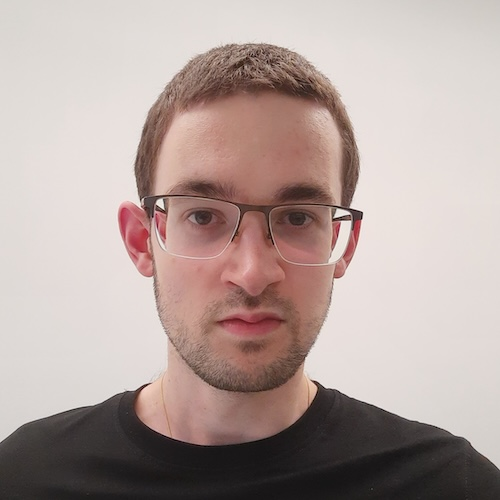

PhD student in informatics @ Software Institute
USI Università della Svizzera italiana
About me: I am a PhD student in programming languages and formal methods at USI Lugano, supervised by Carlo Alberto Furia. My research aims to help programmers ensure that their software's behaviour aligns with their intent.
Research interests: I am mostly interested in programming language design and lightweight formal methods like type systems. My other interests include automated static analysis, compiler front/middle-ends, and usability of formal methods.
Academic projects: I am currently working on refinement types inference in the Licorne experimental programming language. I previously worked on gradual object capabilities for my master's thesis. During my master's, I also worked on program tracing in Java.